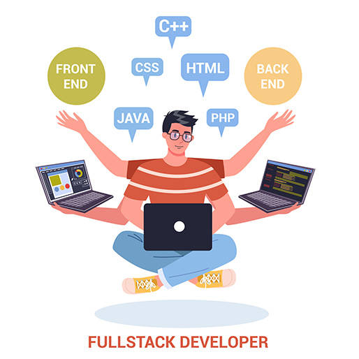

If you are wondering what Java full stack developer skills are, we have listed them below:
1. JavaScript :
It is one of the most fundamental Java full stack developer skills because it simplifies the creation of websites. It is an object-oriented programming language that can run natively in the browser and on the server end. It is commonly used to alter CSS & HTML to modify content, animate illustrations & images, curate interactive maps, etc.
2. HTML / CSS :
Hypertext Markup Language or HTML helps in addition to web content. Cascading Style Sheets or CSS is a customization tool to design the aesthetics of the website. Both CSS and HTML are essential for developing a functional and appealing front end.
3. Git & GitHub :
Git is an open-source software that helps in the acceleration of efficiency and growth of both small and big projects. The java full stack developers can keep a record of the smallest alterations made in the websites, codes, applications and other project files.
4. Backend Languages :
The backend skills required for Java full stack developers are Python, PHP, Java, Ruby, etc. Developers must be adept at writing code, categorizing files and collating data in the databases. He should also understand the technical component of web design.

5. Databases & Web Storage :
All the data relevant to the project is stored in a database. It enables multiple teams to work on the same project in collaboration and be aware of the progress and alterations in the database. These skills will help the developer to store, access and update the data from the database.
6. Spring Frameworks :
Aspect Oriented Programming (AOP) requires the support of the Spring framework. It is the go-to framework for developers who want to work with MVC architecture. It offers Spring Boot and Spring Cloud that simplifies micro-service programming in Java.
7. DevOps Tools (Jenkins, Docker, and Kubernetes) :
A Java developer should be proficient with integration and deployment and the role of Jenkins in it. It is also recommended to develop skills like Ansible, Docker, Kubernetes, etc. Being proficient in DevOps tools is essential for experienced Java developers who are in charge of the establishment of best coding practices, the creation of environments, and the building of scripts and guidelines.
8. Web Design :
Being proficient in the fundamentals of web design will help you to stand out from the crowd and get a job with ease. Developers should know about the User Interface (UI) elements and structural elements of the website. For e.g.: Domain Name System (DNS), Cloud Storage, etc.
9. HTTP & REST :
HTTP or HyperText Transmit Protocol empowers the server to communicate easily with the user. REST or Representational State Transfer is a link between systems that uses HTTP to collect data and conduct various operations on it. REST can be thought of as the intermediary between the front and back end.
10. JUnit and Mockito :
Unit testing skills are one of the skills required for Java full stack developers that distinguish between great and average developers. An experienced Java programmer will always write unit studies for his script. Some of the relevant unit testing skills are JUnit and Mockito.
11. Learn APIs and Libraries :
API or Application Programming Interface is an important component of the Java Ecosystem. Developers should be proficient with popular APIs like:
JSON processing APIs like Gson, Jackson
XML processing APIs like Xerces, JAXB
Unit testing libraries such as Mockito and JUnit
12. JVM Internals :
A Java Developer should be able to answer fundamental questions about Java Virtual Machine (JVM) internals such as various components of JVM, its working methodology, JVM options, JIT, Garbage collections, etc. Proficiency in JVM internals can enable the developers to program high-performance and robust applications in Java.
13. IDE (Eclipse or IntelliJIDEA) :
One of the most essential skills for a Java full stack developer is proficiency in IDEs. Some of the well-known IDEs are NetBeans, Eclipse and IntelliJIDEA. Developers can also develop skills in plugins that make application development even easier or learn various keyboard shortcuts that can help you navigate faster.
14. React or Angular :
Developers are expected to be skilled in front end frameworks like Angular and React. These are some of the most sought-after Java full stack developer technical skills. These JavaScript frameworks have revolutionized the process of web development. You might have heard about JSP, JQuery and Servlet, but in present times it is recommended to grasp skills in React or Angular because most web development projects are incorporating these frameworks.
15. Design Patterns :
Sometimes developers are tasked to develop a Java web application from scratch. This involves writing object-oriented code. Design patterns can provide solutions to some common issues with object-oriented coding. Proficiency in design patterns will enable the developer to write flexible code that is easier to modify in the future if the need arises.